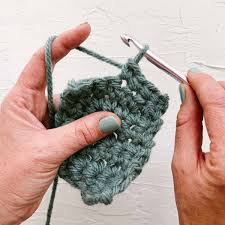
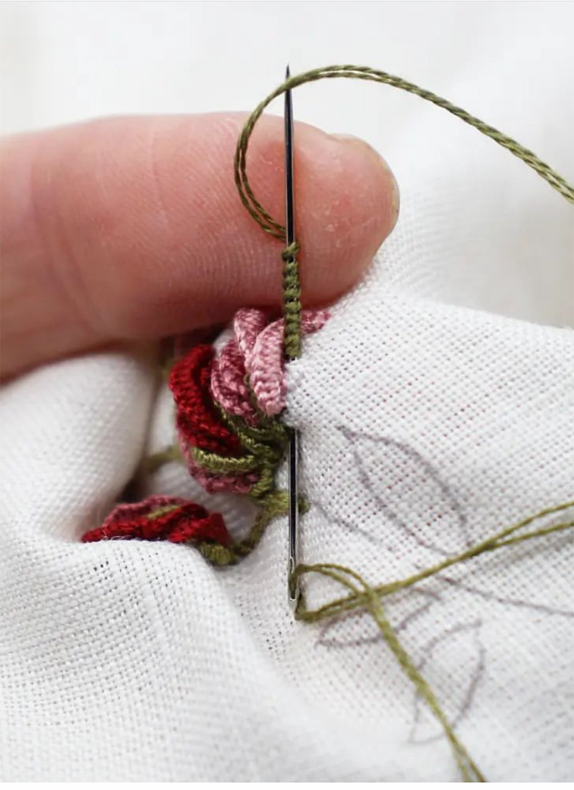
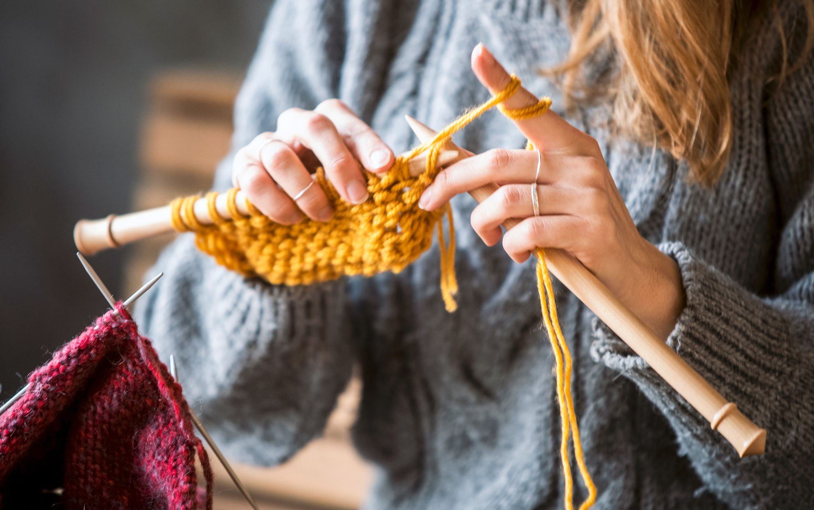

Here are some tidbits of advice from members of our society! Starting a new craft can be challenging and we want it to be a fun experience for you. If you need further help pop round to one of our weekly sessions or send us an email.
Crochet
- Keep your stitches relaxed and loose! It's totally normal to feel tense when you're learning crochet but the more complicated the stitch you learn, the tighter you will tend to hold your hook. Fight that urge, take a deep breath, and keep your stitches relaxed and loose. The looser the stitches, the more easily you'll be able to insert your hook, and the easier the process will be!
- Watch out for UK and US stitch names. For example a treble stitch in the UK is called a double crochet stitch in the US. Make sure you understand what the pattern is asking you for otherwise it'll go very wrong.
- Map out your pattern in Excel to help you keep track of things. Print your pattern off so you can mark off your rows as you go because it helps you remember where you were when you had to stop. It's great because you can adjust the pattern and make it larger and you can colour-code the cells by filling each of them in with a colour.

Embroidering
- To prevent fraying or to stop your thread catching on the fabric edges as you work, you can use the quick and simple method of folding masking tape around the edges of the fabric. This is ideal for small projects that won't take you long to finish. If you're working on something big then using a sewing machine to finish the fabric edge.
- If you want to add words or lettering to your embroidery, write on the fabric in your own hand writing using a pencil or heat erasable pen. Then you can stitch over it. If you want a particular font or style, you can print out the text you want and trace over it.
- Make sure your thread is secure! Fasten off your stitches carefully. Stitch into a few stitches on the back of your work and then weave the end into the back so that any length cut off is further away.

Knitting
- You don't need to buy fancy wool shop to wash your projects. Put some baby shampoo in warm water and let your wool soak, then rinse it and lay it flat out to dry. This saves a lot of money!
- It's easy to buy every bouclé, ribbon or fuzzy-soft yarn you see but when you got them home you'll notice they make a mess of the cables, lace, or other special stitch patterns you wanted to try. Textured yarn works best with simple stitches like stockinette and garter, while a textured stitch works best with a simple high-ply twisted yarn.
- Count the number of stitches in every row or two and make sure they match with the pattern so that you don't have uneven lines. It's super easy for a beginner to miss the last stitch of a row. Also, place your yarn towards you when purling and yarn away from you when knitting.
